library(mosaic)
library(tidyverse)
set.seed(2000)5 正規分布およびその拡張
5.1 正規分布
確率変数 \(X\) が ある値 \(x\) 以下である確率は \(x\) の関数として表され, これを分布関数という. 分布関数は \[ P[X<x]=P[X\leq x]=\int^x_{-\infty}f(t)dt \] であり, ここで \(f\) は密度関数といわれる. 密度関数は分布関数の導関数である. いま確率変数 \(X\) の密度関数 \(f\) が \[ f(x)=\frac{1}{\sqrt{2\pi\sigma^2}}\exp\left(-\frac{(x-\mu)^2}{2}\right) \] のとき, 確率変数 \(X\) は平均 \(\mu\), 分散 \(\sigma^2\) の正規分布にしたがうといい, \[ X\sim Normal(\mu,\sigma^2) \] と表記する. 平均0で分散1の正規分布を標準正規分布という.
標準正規分布にしたがう確率変数の密度関数は以下で記述できる.
gf_dist("norm")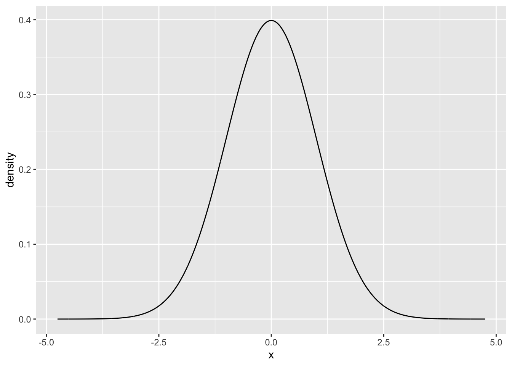
標準正規分布にしたがう確率変数の分布関数は以下で記述できる.
gf_dist("norm", kind = "cdf")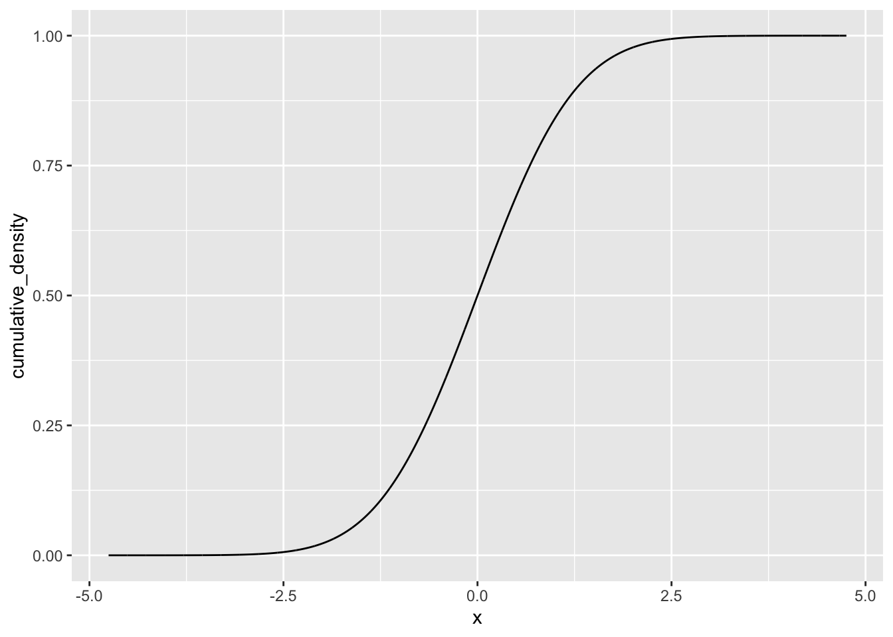
\(Z\) を標準正規分布にしたがう確率変数とする. R で \(P[Z<2]\) となる確率を求めるには以下を実行すればよい. pnorm(2) もしくはその拡張を実行すればよい.
xpnorm(2)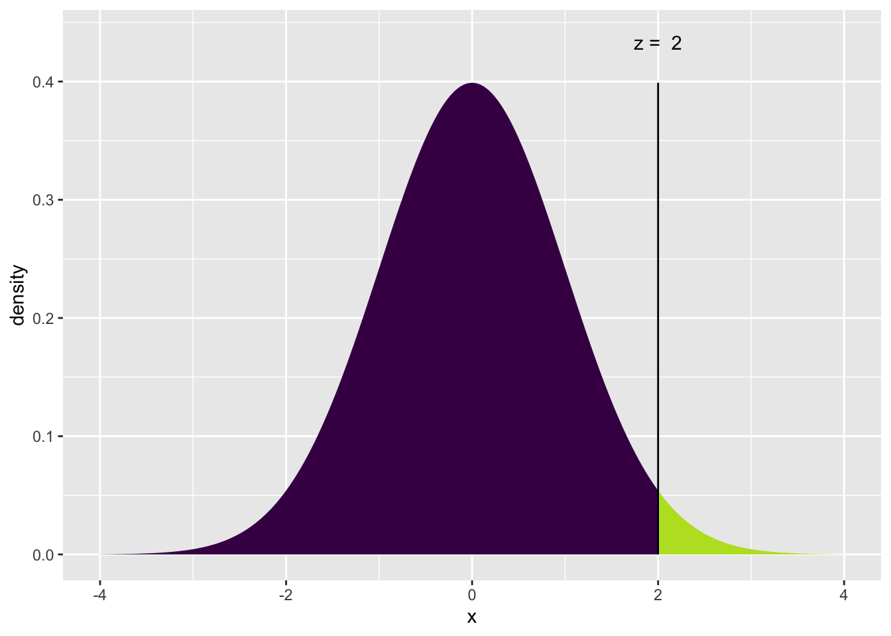
#> [1] 0.9772499なお連続確率変数なので, \(P[Z=2]\) は無視できて, \(P[Z<2]=P[Z\leq 2]\) となる.
\(P[-1<Z<2]\) となる確率は以下の赤い部分の面積を求める.
gf_dist("norm", fill = ~ (x > -1 & x < 2), geom = "area")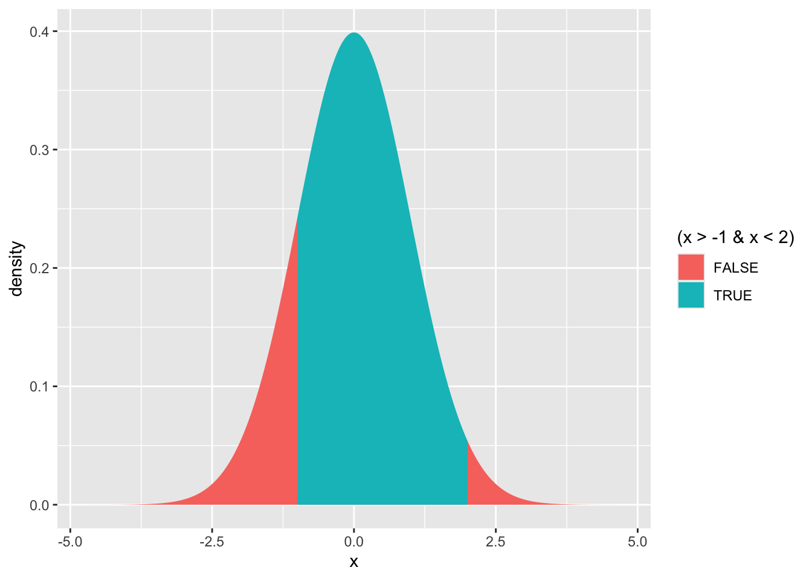
この面積を求めるには以下を実行すればよい.
pnorm(2) - pnorm(-1)
#> [1] 0.8185946\(P[Z<x]=0.2\) となる \(x\) を求めるには qnorm(0.2) もしくはその拡張を実行すればよい.
xqnorm(0.2)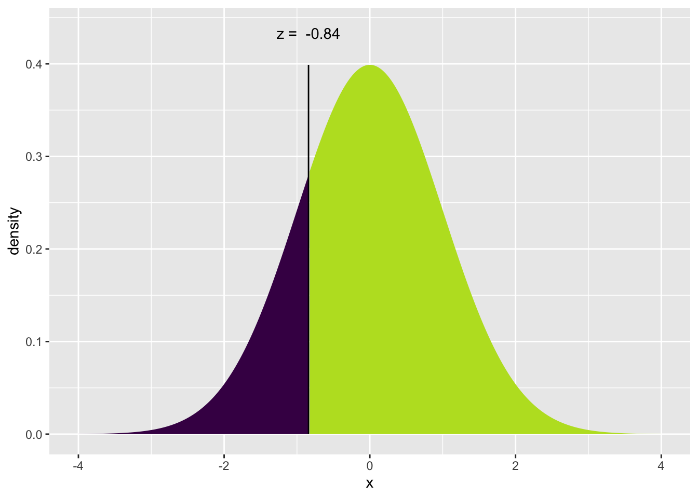
#> [1] -0.8416212\(P[|Z|<x]=P[-x<Z<x]=0.2\) となる \(x\) を求めるには, \(P[Z<x]=0.6\) なので以下を実行すれば良い.
qnorm(0.6)
#> [1] 0.2533471乱数は次にように発生させることができる.
rnorm(10)
#> [1] -0.8538432 -0.3528894 0.8901495 1.7412867 0.9160783 -1.1766014
#> [7] -1.9384381 2.0943785 0.2254749 1.1762761乱数を1万個発生させ, ヒストグラムを作成すると密度関数とほぼ同じになる.
gf_dhistogram(~rnorm(10000)) |>
gf_dist("norm")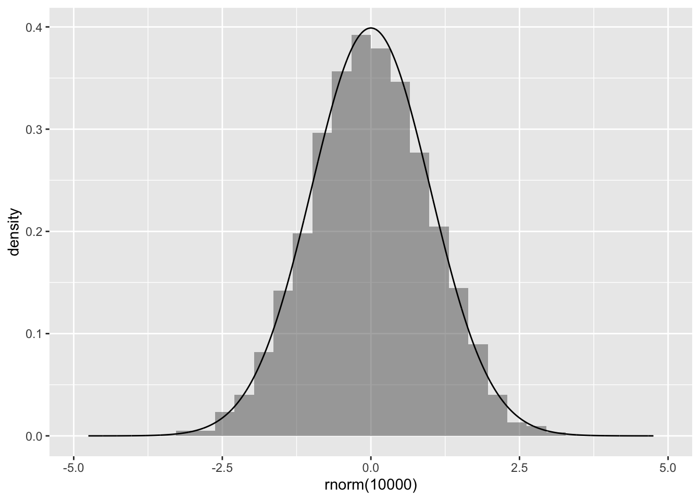
5.2 カイ二乗分布
\(m\)個の確率変数 \(Z_{1},\ldots,Z_{m}\) は互いに独立な標準正規分布にしたがうとする. このとき \[ W=\sum_{i=1}^{m}Z_{i}^{2} \] は自由度 \(m\)の カイ二乗分布 にしたがうといい, \(W\sim\chi^{2}(m)\) と表記する.
たとえば自由度5のカイ二乗分布の密度関数は次のように表記される.
gf_dist("chisq", df = 5)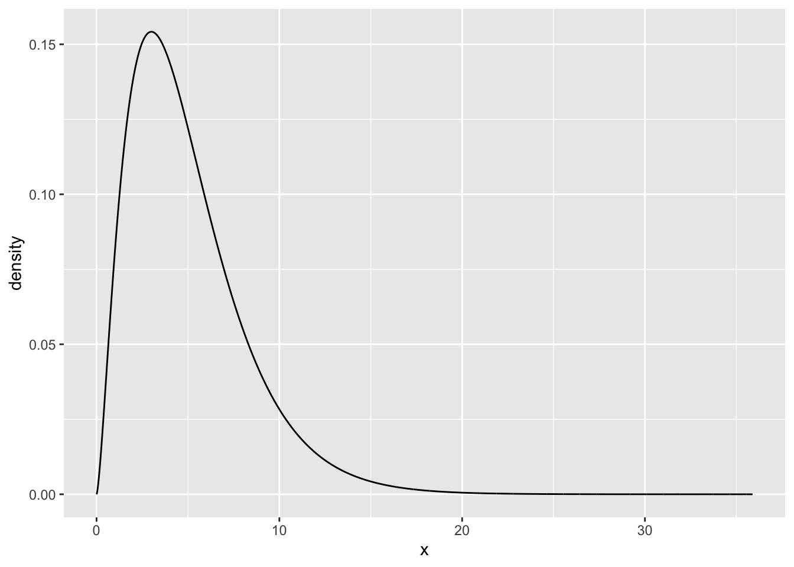
シミュレーションでこのことを確かめる.
x <- function(k) sum(rnorm(k)^2)
df <- do(1000) * x(5)
gf_dhistogram(~x, data = df) |>
gf_dist("chisq", df = 5)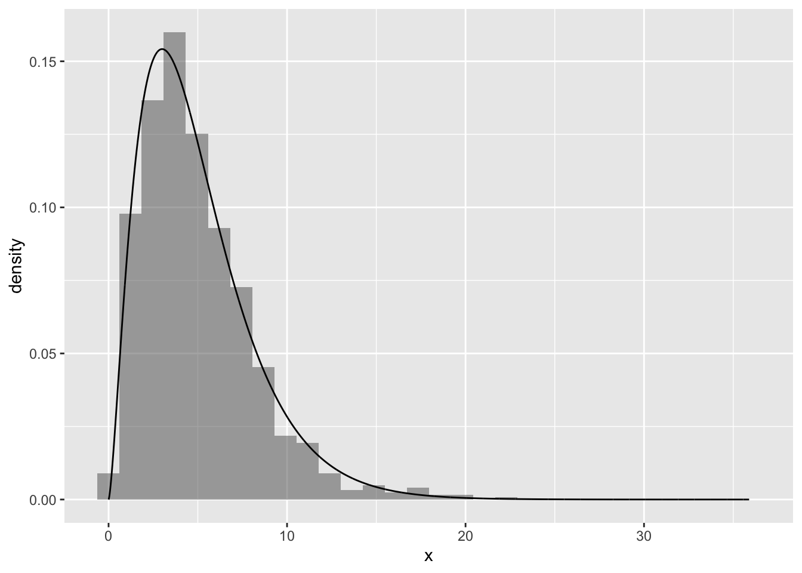
正規分布のときと同様に関数 pchisq, xpchisq, qchisq, rchisq が利用可能である. たとえばば自由度5のカイ二乗分布にしたがう確率変数 \(X\) が \(P[X\geq x] =0.95\) となる \(x\) は qchisq(0.95,df=5) もしくはその拡張を実施する.
xqchisq(0.95, df = 5)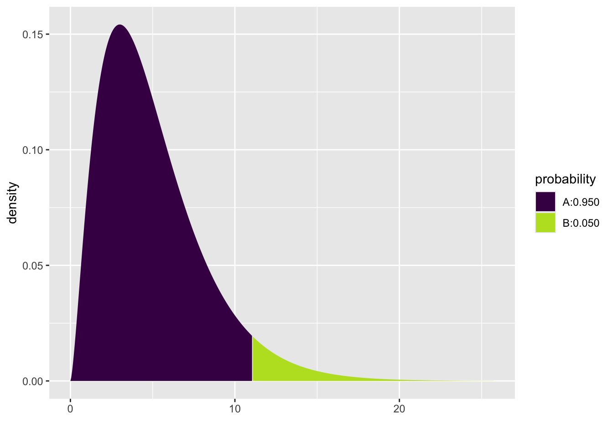
#> [1] 11.07055.3 ティー分布
確率変数 \(Z\) は標準正規分布にしたがい, \(W\) は自由度mのカイ二乗分布にしたがうとする. \(Z\) と \(W\) が独立ならば \[ T=\frac{Z}{\sqrt{W/m}} \] は自由度mの ティー分布 にしたがうといい, \(T\sim t(m)\) と表記する. \(m\to\infty\) のとき \(T\sim N(0,1)\) である.
たとえば自由度5のティー分布の密度関数は次のように表記される. 赤い線が標準正規分布である.
gf_dist("t", df = 5, xlim = range(-3, 3)) |>
gf_dist("norm", col = "red")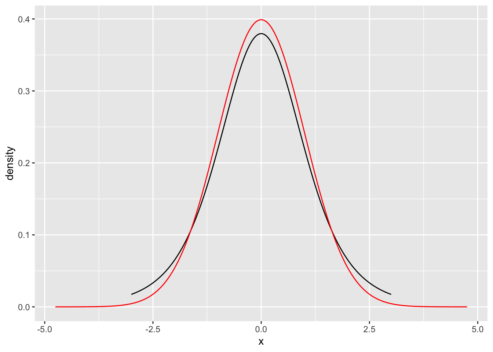
シミュレーションでこのことを確かめる.
x <- function(k) rnorm(1) / sqrt(sum(rnorm(k)^2) / k)
df <- do(1000) * x(5)
gf_dhistogram(~x, data = df) |>
gf_dist("t", df = 5)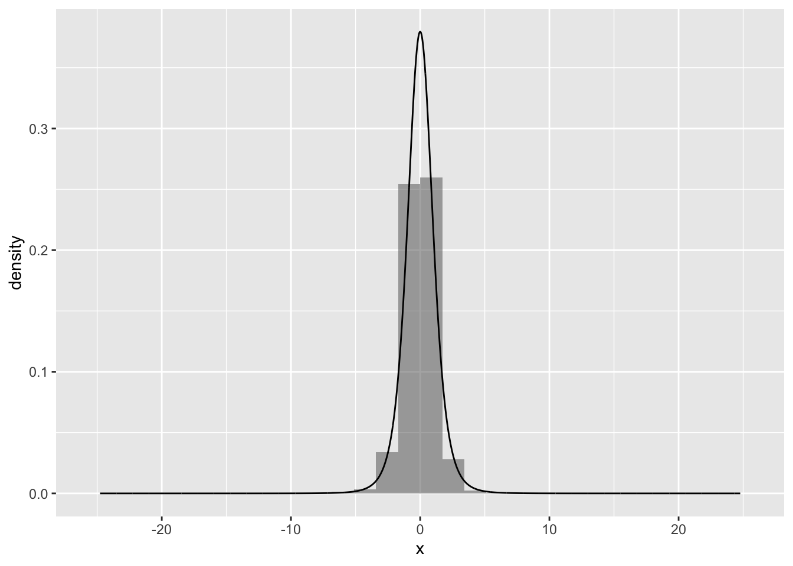
同様に関数 pt, xt, qt, rt が利用可能である. たとえばば自由度5のティー分布にしたがう確率変数 \(X\) が \(P[X\geq x] =0.95\) となる \(x\) は qt(0.95,df=5) もしくはその拡張を実施する.
xqt(0.95, df = 5)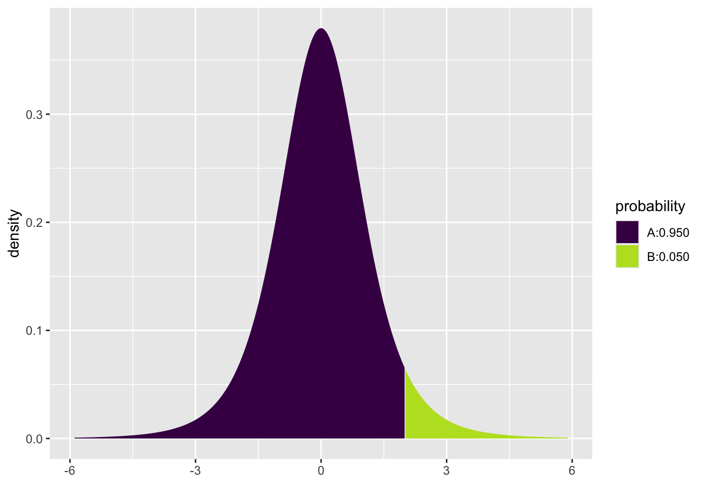
#> [1] 2.0150485.4 エフ分布
確率変数 \(W_{1}\) は自由度 \(m_{1}\) のカイ二乗分布にしたがい, \(W_{2}\) は自由度 \(m_{2}\) のカイ二乗分布にしたがうとする. \(W_{1}\) と \(W_{2}\) が互いに独立ならば \[ F=\frac{W_{1}/m_{1}}{W_{2}/m_{2}} \] は自由度 \((m_{1}, m_{2})\) の エフ分布 にしがたうといい, \(F\sim F(m_{1},m_{2})\) と表記する. \(m_{2}\to\infty\) のとき \(m_{1}F\sim\chi^{2}(m_{1})\) である.
たとえば自由度 \((5, 80)\) のエフ分布の密度関数は次のように表記される.
gf_dist("f", df1 = 5, df2 = 80)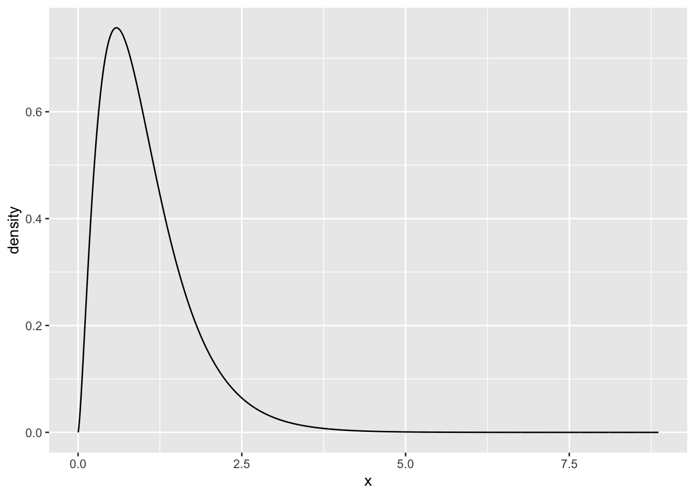
また同じ分布にしたがう確率変数 \(X\) が \(P[X\geq x] =0.95\) となる \(x\) は qf(0.95,df1=5,df2=80) もしくはその拡張を実施する.
xqf(0.95, df1 = 5, df2 = 80)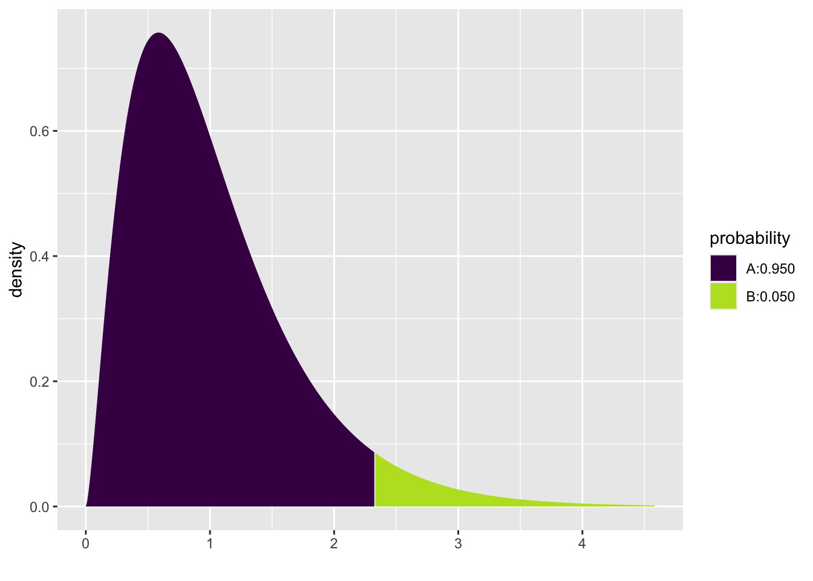
#> [1] 2.328721シミュレーションでこのことを確かめる.
x <- function(k1, k2) (sum(rnorm(k1)^2) / k1) / (sum(rnorm(k2)^2) / k2)
df <- do(1000) * x(5, 80)
gf_dhistogram(~x, data = df) |>
gf_dist("f", df1 = 8, df2 = 5)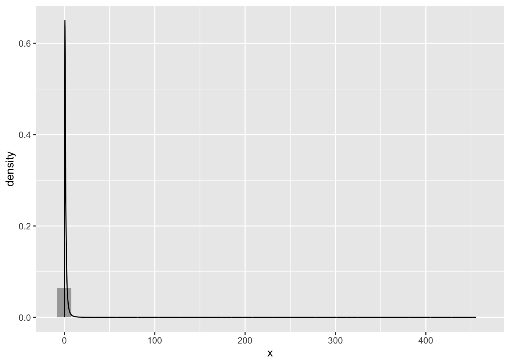
同様に関数 pf, xf, qf, rf が利用可能である.